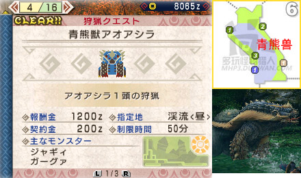

村長任務1星
出自多玩《怪物獵人P3》數據庫
|
| |
| 村長任務1星 - 村長任務2星 - 村長任務3星 - 村長任務4星 - 村長任務5星 - 村長任務6星 - 村長任務7星 |

目錄 |
| 關鍵任務： | 任務3.討伐小狗龍 |
| 任務4.討伐野豬 | |
| 任務5.恐怖的預兆 |
任務1.採集特產蘑菇
| 村★ | 1. 採集特產蘑菇 | 目標：特產蘑菇x10 |
| 特產蘑菇的採集點共有以上4個，采夠數量交到營地紅箱子即可過關。 | ||
任務2.收集靈鹿角
| 村★ | 2. 收集靈鹿角 | 目標：靈鹿角x3 |
| 一出門即可遇到靈鹿，擊殺後有機率剝取到靈鹿角。一般把以上三個區的靈鹿掃蕩乾淨就足夠交任務了。 | ||
任務3.討伐小狗龍（關鍵任務）
| 村★ | 3. 討伐小狗龍 | 目標：小狗龍x5 |
| 【關鍵任務】 目標怪是5只小狗龍，瘦瘦的那種哦，出沒情況如上圖所示，以9區的數量最多。 | ||
任務4.討伐野豬（關鍵任務）
| 村★ | 4. 討伐野豬 | 目標：野豬x3 |
| 【關鍵任務】 目標怪是3只野豬，分別出現在3個區里，建議討伐順序：②⑤⑨ | ||
任務5.恐怖的預兆（關鍵任務）
| 村★ | 5. 恐怖的預兆 | 目標：蜂蜜x5 |
| 【關鍵任務】 任務目標看起來很簡單，不就是采蜂蜜嘛~不過當我們採完9區的蜂蜜奔赴5區時，青熊獸不應景的出現，還一屁股坐在蜂巢底下不走了……於是高手請暴揍之，新手請在貓貓的掩護下采集蜂蜜回營地交差。（再次進行該任務時青熊獸不會強制出現在5區蜂巢處） | ||
緊急任務.討伐青熊獸
|  | ||
| 村★ | 討伐青熊獸 | 目標：青熊獸x1 |
| 【緊急任務】 此戰需要收拾上一關和獵人們搶蜂蜜的青熊獸，在6區附近可以遇到它。它的主要攻擊為前撲和連續揮爪，利用翻滾保持在側後方進行打擊即可。距離拉遠時它比較喜歡使出衝撞，不過基本沒有威脅。（此緊急任務完成後變為村★★第4個任務） | ||
|
| |
| 村長任務1星 - 村長任務2星 - 村長任務3星 - 村長任務4星 - 村長任務5星 - 村長任務6星 - 村長任務7星 |